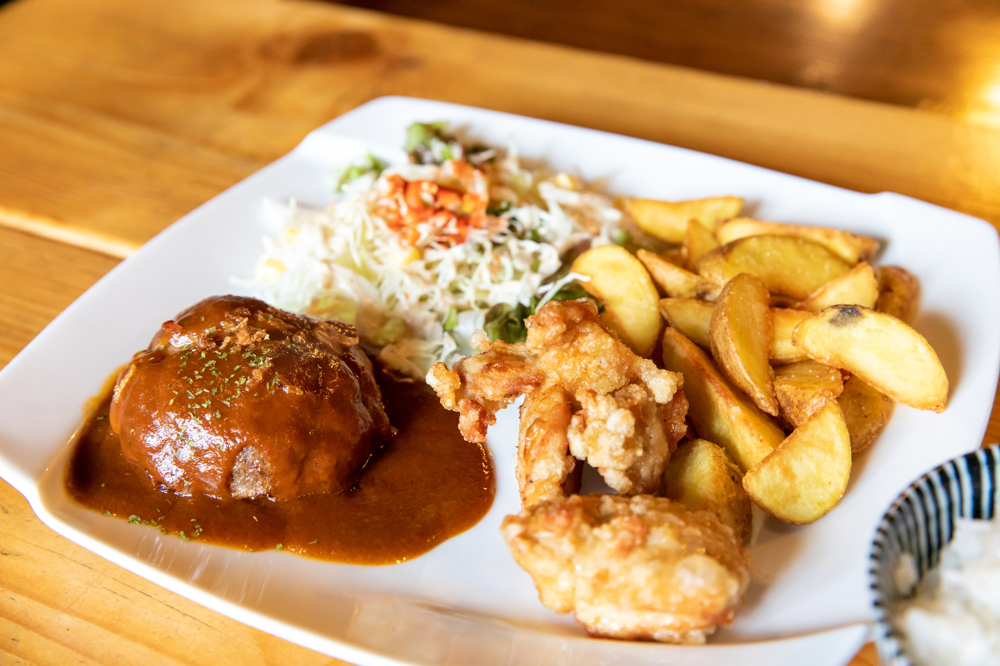
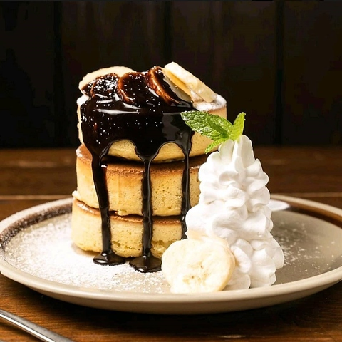
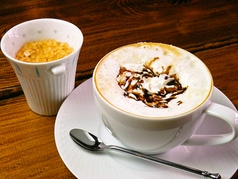
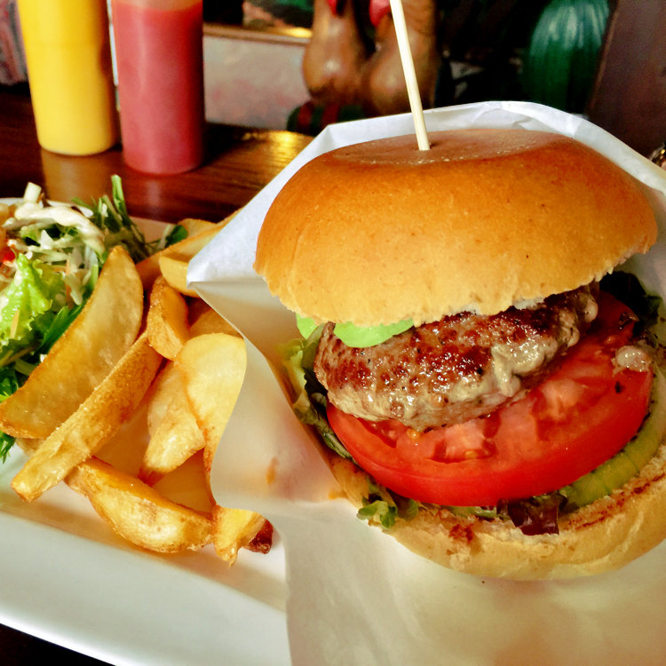
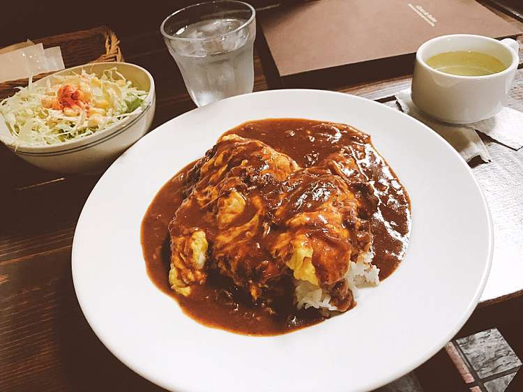

旅の思い出を詰め込んだ
不思議な空間
町屋の風情と非日常的な空間で...
町屋の風情を残しながらも、非日常的な空間。
大勢で、一人でゆっくり過ごしたりと自分に合ったテイストで楽しめる。
レトロな雰囲気も味わいつつ世界旅行の思い出を詰め込んだ空間を堪能することができます。
RECOMMEND
-

- Mixプレート
- ハンバーグ、唐揚げ、ポテトを一つのプレートに盛付けた、ボリューム満点の一品。しっかりと食べたいときに最適。
-

- チョコバナナパンケーキ
- 特製パンケーキにたっぷりのバナナとチョコレートソースがかかった名物の一つ。バニラアイスと生クリームまで味わえる豪華な一品。満足すること間違いなし。
-

- クリームカフェモカ
- カフェラテを生クリームとチョコで豪華にデコレーション。デザート感覚の甘いドリンクは、心まで温かくしてくれる。
-

- 町子バーガー
- 特製の名物ハンバーガー。王道の具材を使用し、特製ソースがクセになってしまう至極の一品。
-

- 喫茶店のハヤシライス
- なぜか食べたくなる喫茶店のハヤシライス。さまざまなトッピングが可能で自分だけの好みのハヤシライスを味わうことができる。